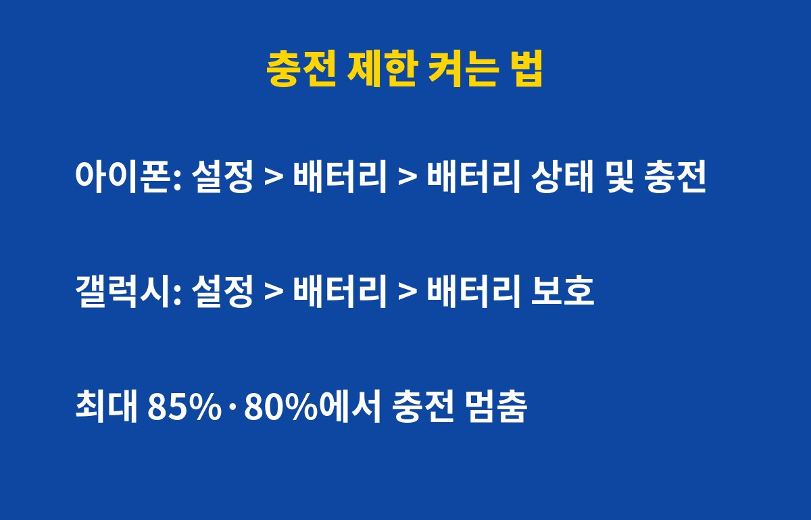
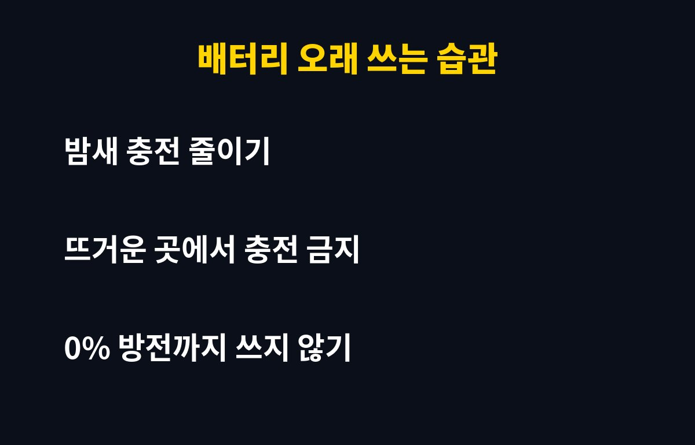

폰 배터리 충전 제한은 지금 설정 메뉴에서 1분이면 켤 수 있고, 켜 두면 배터리 수명을 훨씬 오래 지킬 수 있어요. 밤새 100%까지 꽂아 두는 습관이 있다면 지금 확인해 보세요. 그런데 이 기능을 켜면 오히려 불편해지는 사람도 있어요. 이유는 아래에 있어요.
밤새 충전하면 정말 배터리가 빨리 닳을까요?
리튬이온 배터리는 가득 찬 100% 상태로 오래 머물수록 부담이 커져요. 특히 열이 더해지면 노화가 빨라진다고 알려져 있어요. 침대 위, 이불 속에서 충전하면 열이 빠져나가지 못해서 더 불리해요.
그래서 요즘 폰들은 충전을 일정 비율에서 멈추는 기능을 기본으로 넣고 있어요. 문제는 이 기능이 꺼져 있는 폰이 많다는 거예요. 1~2년 쓰고 "왜 이렇게 빨리 닳지?" 싶었다면 충전 습관을 의심해 볼 만해요.
폰 배터리 충전 제한, 아이폰과 갤럭시, 충전 제한은 어디서 켤까요?
아이폰은 설정 > 배터리 > 배터리 상태 및 충전으로 들어가면 충전 한도를 80%로 제한하는 옵션이 있어요. 최적화된 배터리 충전도 같이 켜 두면 사용 패턴을 학습해서 필요한 시간에 맞춰 마저 채워 줘요.
갤럭시는 설정 > 배터리 > 배터리 보호에서 켤 수 있고, 최대 충전 비율을 85%로 제한하는 방식이에요. 기종과 One UI 버전에 따라 메뉴 이름이 조금 다를 수 있으니 설정 검색창에 '배터리 보호'를 쳐 보세요.

| 구분 | 메뉴 | 제한 방식 |
|---|
| 아이폰 | 배터리 상태 및 충전 | 80% 제한 / 최적화 충전 |
| 갤럭시 | 배터리 보호 | 최대 85% 제한 |
폰 배터리 충전 제한, 충전 제한을 켜면 손해 보는 사람도 있다고요?
네, 있어요. 하루 종일 밖에서 폰을 쓰는데 보조배터리가 없다면, 85%에서 멈추는 게 부담일 수 있어요. 이럴 땐 평소에는 켜 두고, 장거리 이동이나 출장 전날만 잠깐 끄는 식으로 쓰면 돼요.
반대로 집이나 사무실에서 주로 충전하고 퇴근 후 쓰는 시간이 길지 않다면, 제한을 켜 두는 쪽이 이득이에요. 배터리 교체 비용과 서비스센터 방문 시간까지 생각하면 작은 설정 하나가 꽤 큰 차이를 만들어요.

폰 배터리 충전 제한, 이번 주 안에 하는 순서
설정은 1분이면 끝나니까, 이번 주 안에 아래 순서대로 켜 두세요.
미루다 결국 배터리 교체 비용을 날린다는 경고가 남 일이 아니게 될 수 있거든요.
- 폰 소프트웨어를 최신 버전으로 업데이트해요.
- 아이폰은 설정 > 배터리 > 배터리 상태 및 충전에서 충전 한도를 켜요.
- 갤럭시는 설정 > 배터리 > 배터리 보호를 켜요.
- 충전할 때는 이불 위처럼 열이 쌓이는 곳을 피해요.
- 한 달 뒤 배터리 상태 메뉴를 다시 열어 변화를 확인해요.
처음 며칠은 충전이 중간에 멈추는 게 어색할 수 있어요.
그래도 일주일쯤 지나면 하루를 쓰는 데 큰 차이가 없다는 걸 느끼게 돼요.
외출이 긴 날에는 보조배터리를 챙기거나 그날만 잠깐 끄면 돼요.
충전 횟수보다 뜨거운 상태로 오래 있는 시간이 배터리에 더 큰 부담이라는 점을 기억해 두세요.
고속 충전도 편하지만 열이 더 날 수 있어서, 잘 때는 일반 충전기를 쓰는 쪽이 낫다고 알려져 있어요.
케이스가 두꺼운 폰은 충전할 때 잠깐 빼 두면 열이 덜 쌓여요.
가족 폰도 같은 설정을 해 두면 좋아요.
특히 부모님 폰은 설정을 잘 안 바꾸시니 대신 켜 드리는 게 좋아요.
메뉴 이름은 기종과 버전에 따라 조금 다를 수 있으니 설정 검색창을 활용하세요.
폰 배터리 충전 제한, 충전 제한 말고 또 뭘 바꾸면 수명이 늘까요?
첫째, 뜨거운 곳에서 충전하지 않기예요. 여름 차 안, 직사광선 아래, 두꺼운 케이스를 씌운 채 고속충전은 열이 쌓이기 쉬워요.
둘째, 0%까지 쓰고 나서 충전하는 습관을 줄이는 거예요. 20~30%쯤에서 가볍게 충전하는 게 배터리에 덜 부담이에요.
셋째, 정품 또는 인증받은 충전기를 쓰는 거예요. 값싼 비인증 충전기는 전압이 불안정해서 배터리뿐 아니라 안전에도 좋지 않아요.
오늘 바로 설정 메뉴를 열어 충전 제한부터 켜 보세요. 이런 생활 밀착 IT 정보가 도움이 됐다면 구독해 두고 다음 글도 받아 보세요.
기사·공식 발표 기준이며 출시·가격 정보는 바뀔 수 있어요.